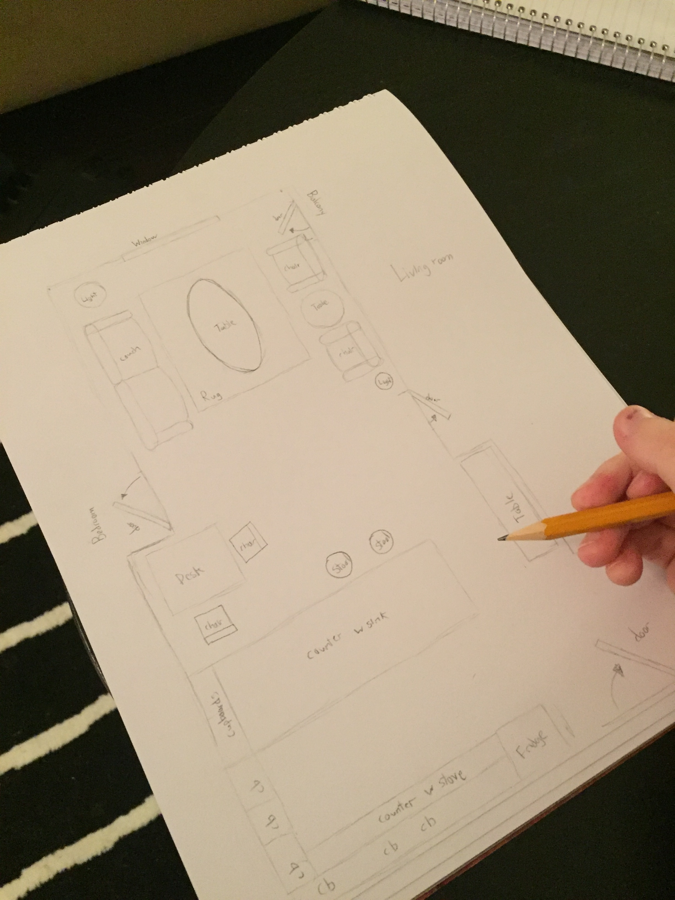
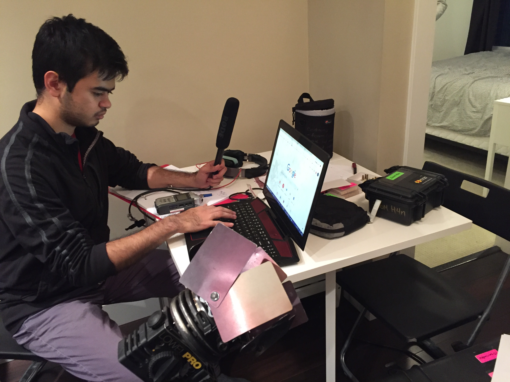
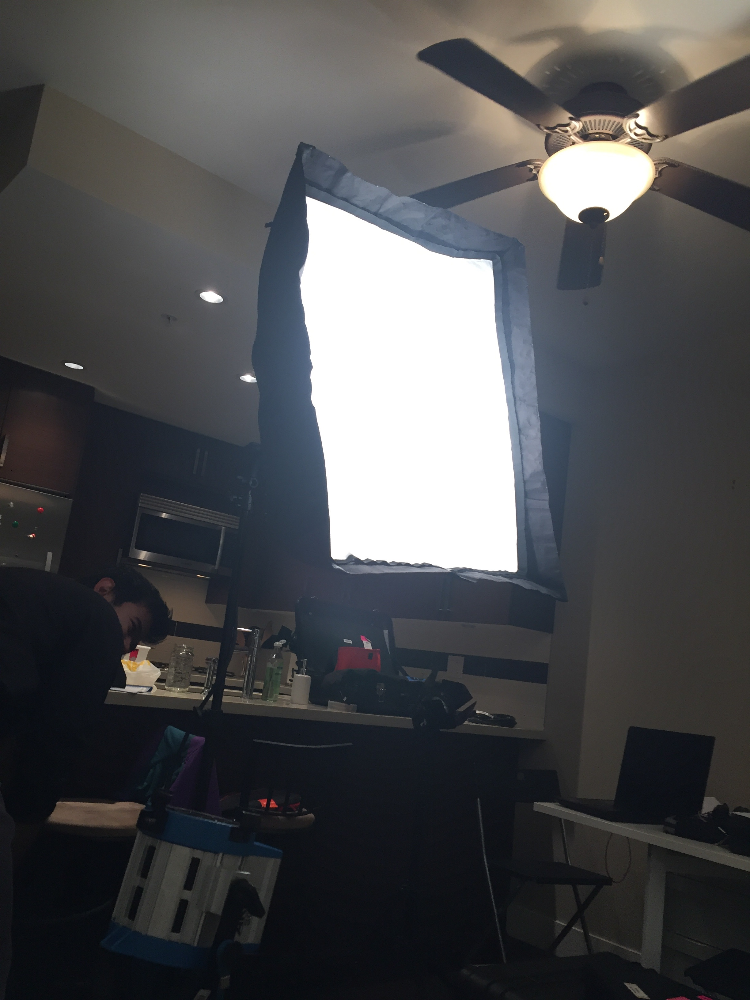
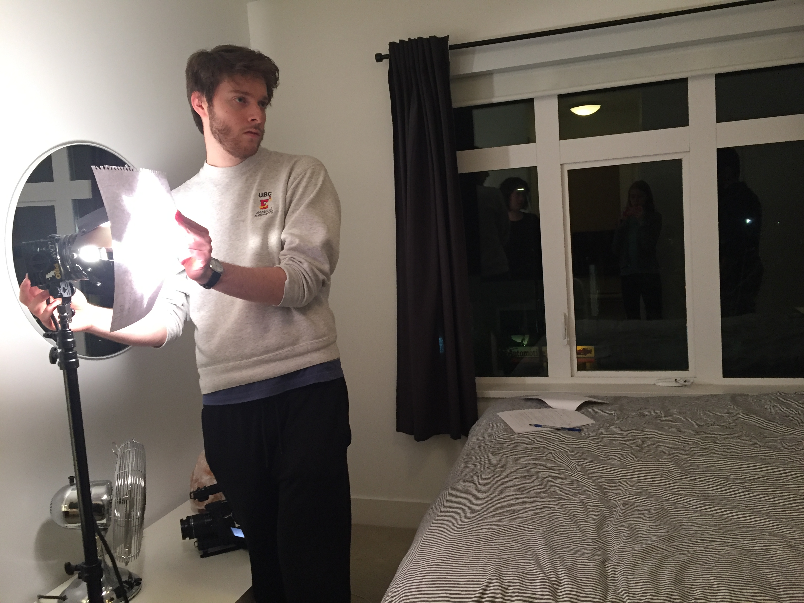

Project Information
Project Name: Short Film
Role: Key Grip
Solo or Group: Group
Length: Entire Semester
Tools/Techniques used: iPhone 7 for Documentation, Various Videography Equipment, Sketchpad & Drawing Utensils
Project Name: Short Film
Role: Key Grip
Solo or Group: Group
Length: Entire Semester
Tools/Techniques used: iPhone 7 for Documentation, Various Videography Equipment, Sketchpad & Drawing Utensils
In the fall 2018 semester at Simon Fraser University, my course in film tasked myself and my group with producing a short film. Our group designed the setting, script, recruited the actors, reserved the sets for shooting and, for my task, organizing and transporting the productions equipment.
One other minor role I had was documenting our process for setting up for filming as well as the film day as a whole. While both roles were quite major in the development of my skills, I will be focusing on the key grip aspect of my contributions for this anaylsis.
The main challenge I encountered with providing my group with the equipment needed was how much in general was needed. Transporting lights, camera, tripods, microphones and audio recorders, reflectors and more was not a feasible feat alone. Not only that, but due to other groups also needing this equipment, I had to stay on my toes keeping our equipment booked and available for our team members to use. In order to tackle these issues, I made myself a schedule for when to book the equipment, when to return it, and when to schedule transportation to the film sets. This helped me keep my thoughts organized, as well as add to the list of any new equipment we needed as the production went along. I asked my team members for assistance when transporting the equipment as they had access to larger vehicles that I did not have access to. Overall, keeping a clear schedule and communicating well with my group lead us to having no issues whatsoever on the equipment end of the project, and filming days went very smooth as a result.
  Reflecting back, I hold this experience very dear as it has helped grow my organization, planning, and communication skills. While it may not have been as design related, such as taking on the role of an editor or visual director, I believe it is as equally important to know your way around the equipment you are using, as misuse can quickly deteriorate the overall quality of any project, or even the equipment itself. I take pride in treating both the project itself and the equipment we use with care.